使用 AI 自动执行 Web 爬网¶
编写爬网程序从网站中提取数据似乎是一个棘手的问题。问题是，虽然构建一次性爬网程序很容易，但跨网站通用的编写系统并不容易，因为网站通常具有独特的基本模式。更重要的是，网站结构会随着时间而变化，因此这些系统必须强大才能改变。
在机器学习时代，是否有更智能、更免提的爬行方式？这是一个我们多年来一直在回避的目标，随着时间的推移，我们在为特定领域（电子商务）进行自动可概括爬网方面取得了不错的进展。在这篇文章中，我想描述我们构建的系统及其背后的算法;这项工作是我们团队最近提交的专利申请的主题。
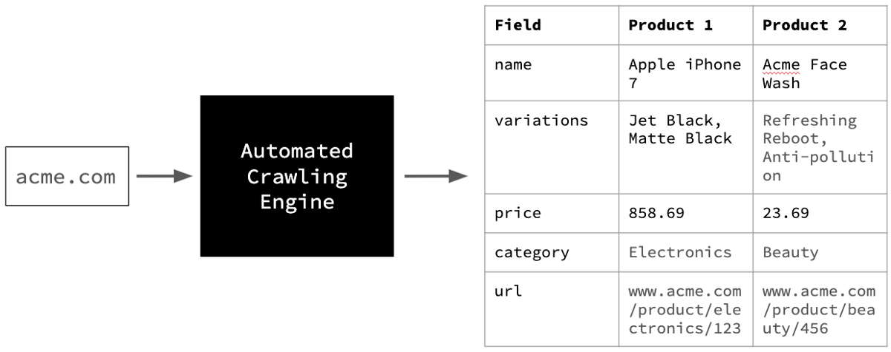The goal of our automated crawling project
我们在此项目中的目标是提取电子商务网站的全部目录，只提供其主页网址（见上图）。这涉及三个关键挑战。
挑战#1挑战 – 识别产品 URL¶
页面类型¶
网站包含各种页面，因此在开始时，我们需要一个系统来将有用的页面与其余页面分开。
在电子商务方面，网站有：
- 类别着陆页（例如女装着陆页）
- 品牌特定页面（例如耐克产品页面）
- 交易特定页面（折扣和优惠）
- 卖家信息页面（关于销售产品的业务，在市场的情况下）
- 查看页面和论坛（客户生成的内容）
- 产品页面（描述特定产品并允许您购买）
...和更多。由于我们的目标是捕获产品详细信息，因此我们将只选择隔离产品页面。其他页面不使用，除了发现产品页面。
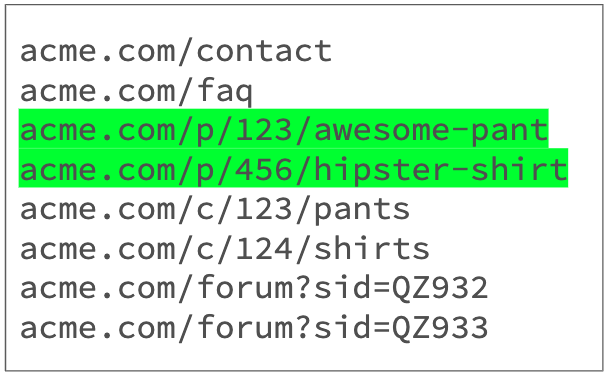Challenge #1 — Identifying product URLs Sample product page
监督分类？¶
我们处理这个问题的最初方法是将它界定为受监督的多类分类问题，每个页面的 HTML 和屏幕截图都通过分类器发送。
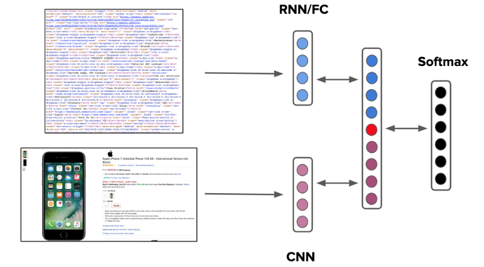Supervised classification approach to identifying product URLs, both visually and using HTML (features)
但是，此方法的的问题是，它要求我们首先对 URL 进行爬网，以便对它们进行分类。浪费的爬网是资源效率低下。为了减少一次性爬网，我们需要一个系统，可以只使用网页的URL做出决定。
输入、URL 群集¶
URL 聚类的目的是根据字符串模式将 URL 划分为组。
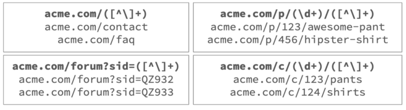Clustering URLs into groups
这样做的第一步是按路径和查询字符串拆分 URL，并计算每个组件组的排名。
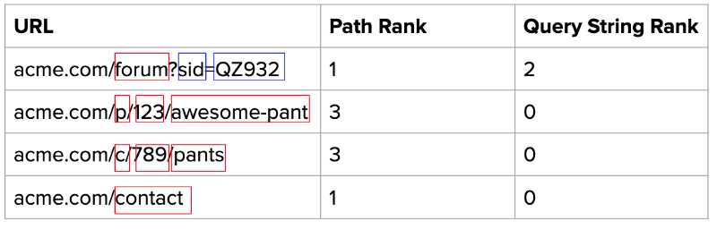Identify number of URL parameters
接下来，我们尝试使用一组全面的预定义迷你正则表达式来表示每个组件。
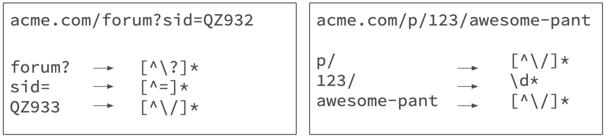Find a mini-regex for each parameter
最后，我们将每个 URL 分解为一个树，特定于其路径排名 - 查询字符串排名组合，如上所示。
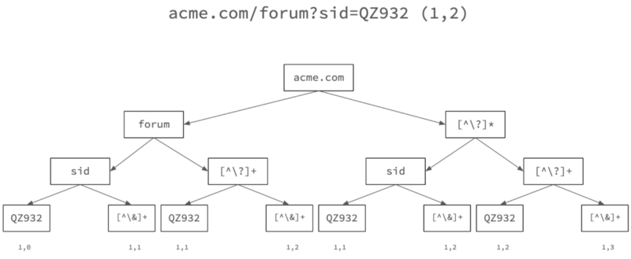Create a URL tree for each rank-pair (URL #1)
这是一个二叉树，其中每个节点拆分为两个子节点，一个表示 URL 组件的特定文本，另一个表示通用的迷你正则表达式。在每个叶节点上，我们记下两个数字 — 分解为该叶节点的 URL 数和该路径中使用的通用正则表达式模式数的计数。
让我们通过上面的同一树运行另一个 URL，并查看它是如何更改的。
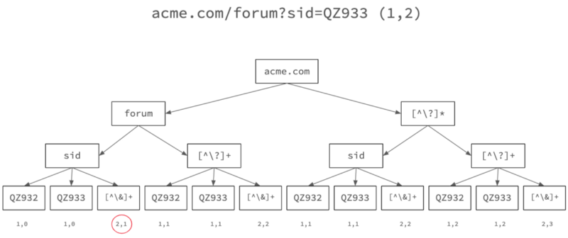Create a URL tree for each rank-pair (URL #2)
请注意重叠树路径的频率计数器如何随着第二个 URL 的进入而发生变化。
为了确定 URL 的代表性正则表达式，我们选择叶频率最高的路径，其正则表达式泛化程度最高。这允许我们分组 URL，如上所示 – 在此示例中，代表性正则表达式是 acme.com/forum?sid=([^\]+)。
标记组¶
我们快到了现在，我们已将 URL 划分为多个组，我们如何确定哪个组表示产品 URL？当然，我们使用上面所示的监督分类方法！
不过，这一次，由于我们需要标记组而不是每个单独的 URL，我们只需要从每个组中采样一些 URL 并瞧，我们的可伸缩性挑战是可以克服的。
侧边栏：这种基于正则表达式的方法还允许我们规范化 URL，即重复复制有效指向同一网页的不同 URL 表单。这是因为 URL 群集中的一个正则表达式组通常指向产品的唯一 Web SKU ID。
挑战#2 – 采矿产品 URL¶
蜘蛛过载¶
现在，我们知道要查找什么，我们需要找出如何找到尽可能多的产品 URL。
这样做的明显方式是访问主页，收集它导致的所有 URL，反过来访问每个 URL，然后重复。
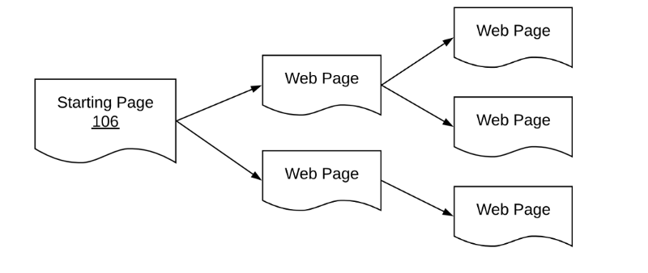Spidering explosion
但是，此方法的此问题是收集的 URL 数量在几个级别的蜘蛛中爆炸。从成本和时间的角度来看， 抓取这些蜘蛛 URL 的每一个都令人望而却步。是否有更智能的方法？
人会做什么？¶
如果实习生负责挖掘产品 URL，他/她如何处理？一种策略是查找类别列表页面。
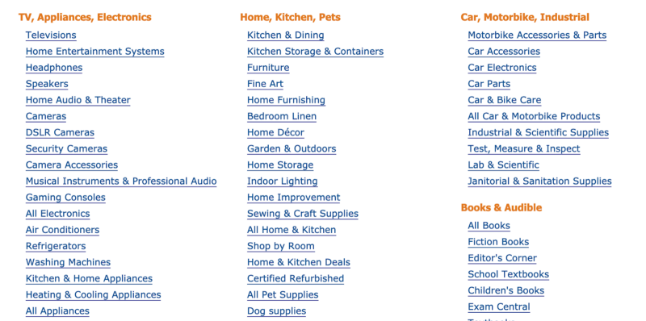Category listing pages
然后系统地穿过去。
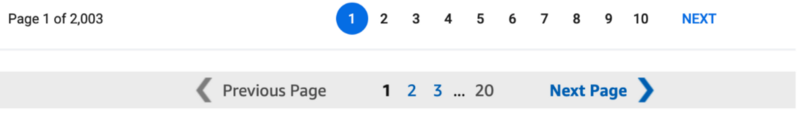Pagination elements
有些策略会比另一些策略更理想。例如，相比之下，从产品 URL 页面访问推荐的类似产品不太可能系统地最大化发现的 URL 数量。
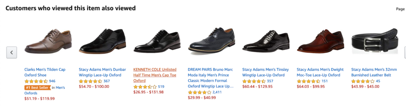Product recommendation pages usually offer diminishing returns
我们如何围绕发现策略和评估策略来验证这种直觉， 以算法的形式进行？
让我们来游戏化我们的挑战¶
Multi-armed bandits to the fore
我们可以将问题设置为游戏，其机制定义如下：
- 选择： 每个拉取都是要爬网的 URL（群集）的选择。
- 操作 ：每次转时，代理选择从中爬网采样 URL 的 URL 群集。
- 奖励 ：奖励发现的每个独特的产品 URL。
- 成本 ：每个动作/爬网都会累积固定的负奖励;这会惩罚代理触发过多的无果爬取。
- 状态 ：跟踪已发现哪些 URL、访问了哪些 URL 以及每个群集累积的奖励积分数。
从这里，即使是一个简单的埃普西隆-贪婪策略也有效工作：
- 初始探索 ：代理随机采样来自每个群集的 k URL。
- 利用 ：稳定状态，具有最高支付率的群集选择 1-e% 的时间。
- 随机探索 ：e%的时间，随机集群被选中。
在那里，我们有它。结合我们识别产品 URL 的方法，我们现在有办法生成产品 URL，只需提供电子商务域的主页。
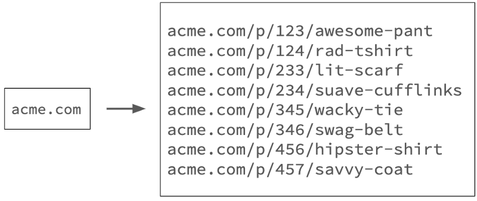One step to go
挑战#3 – 从产品 URL 中提取内容¶
最终老板¶
最后，我们面临从产品 URL 中提取结构化属性的挑战，这是 Web 爬网最难的部分。
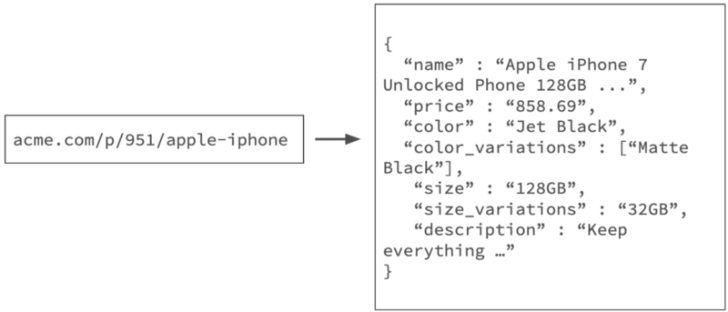Challenge #3 — Content extraction from product URLs
基线获胜¶
我们使用元标记映射和 DOM 树规则在可能的情况下实现快速胜利 - 一组有效的启发式方法的基线在解决问题方面大有作为。然而，如果这些规则不能提供足够的召回，我们转向元素分类。
输入功能¶
我们的方法是构建深度学习分类器，将 HTML 元素标记到特定已知属性列表中。
我们通过无头 Chrome 会话呈现网页，并从网页中检索关键元素，以及以下功能：
- HTML 功能：例如，标签类型、字体大小、字体重量
- 视觉特征 ：例如颜色、宽度、高度、面积
- 文本 功能：例如字符串的长度、数据类型
- 位置特征 ：边界框的 x-y 坐标
然后，具有相似坐标和属性的元素合并在一起。此组确保仅将页面上可能表示我们正在寻找的信息种类的独特元素发送到下一阶段。
分类器¶
收集此数据后，输入将与其他可用的多模式数据（如元素或文本字符的相关屏幕截图）一起输入分类器。
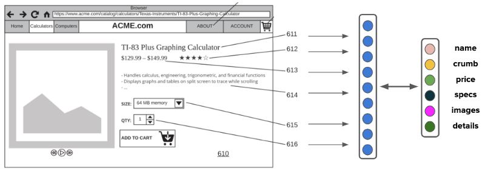HTML Element Classifier
输出类符合一组可能字段的标准组，如名称、面包屑、价格、图像、规格、描述等。
您问，我们如何处理新字段（即特定于类别的字段（如屏幕大小或 RAM 内存）的需要？大多数电子商务网站代表网页伞部分下的此类字段，如规格或说明。我们的方法是捕获所有此类信息，如非结构化文本或键值对，然后通过我们的文本属性提取管道运行它，这是一个不同讨论的主题。
关于功能的字¶
请注意，在模型的输入要素列表中，我们并没有显著强调元素中的文本字符或图像像素;即使没有这些关键信号，也只需使用元数据功能，通常也能够自信地预测特定元素指的是什么。
例如，考虑如下图所示的日本电子商务网站的屏幕截图， 即使对于不懂日语的观察者来说， 将页面的细分映射到通常理解的属性也不难。这是因为电子商务网站往往符合设计模式的规范。
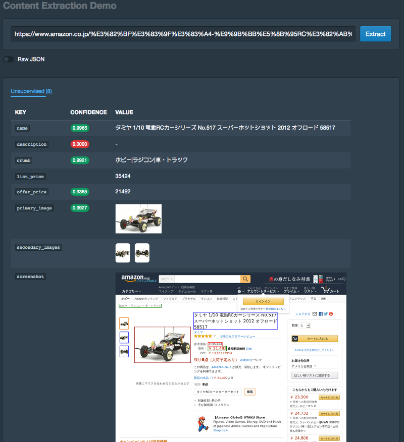Content extraction demo on Japanese website — note the extracted fields and boxes drawn
这适用于阿拉伯语网站，即使文本是右到左面向。
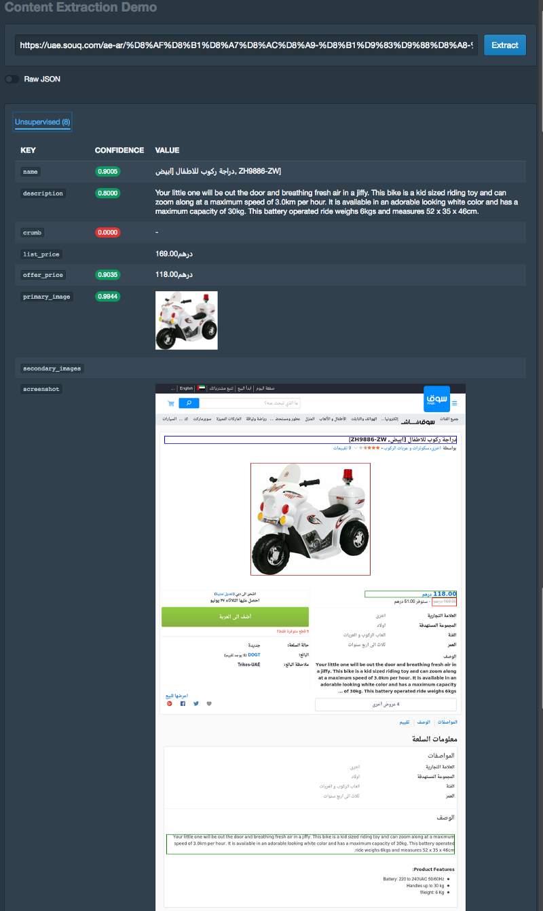Content extraction demo on Arabic website (right to left oriented) — note the extracted fields and boxes drawn
变化呢？¶
这里是它变得非常棘手的地方。电子商务产品通常具有变体选项（考虑颜色和大小） – 提取此类信息需要与网页进行交互，并在相关情况下识别嵌套模式和组合。
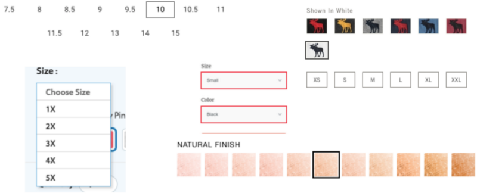Variation palette #1 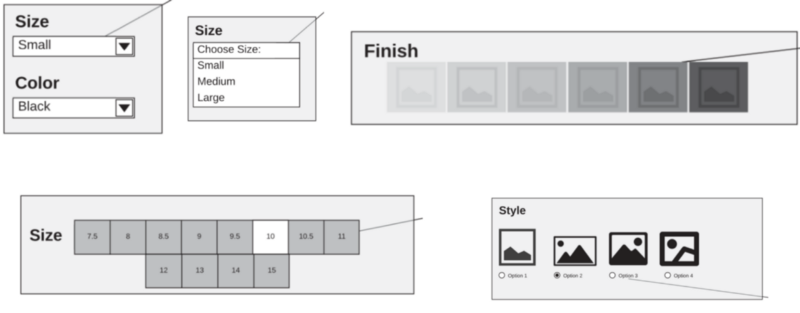Variation palette #2
我们解决这个问题涉及两个步骤。首先，我们使用二进制分类器确定哪些元素具有变体选项。
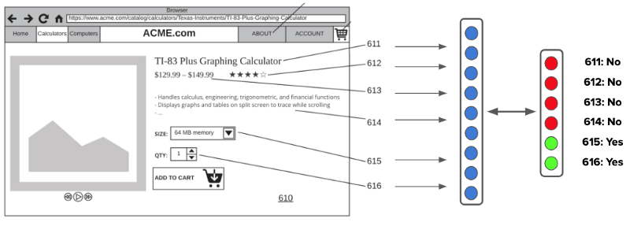Detect variation elements using binary classifiers
然后，在无头 Chrome 会话上使用 Puppeteer，我们系统地点击并捕获每个变体组合的状态和功能捆绑包。
最后，每个功能组合都通过我们之前讨论的元素分类系统运行，以在每个变体生成一个输出产品集。
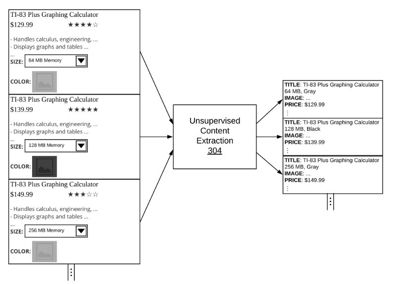Content extraction classifiers run on every variation combination
因此，我们能够使用完全自动化的方法从电子商务网站生成目录。
在实践中，由于大多数爬网项目的目标是尽可能接近完美的精度和召回，因此这些不受监督的方法与人与环的方法结合使用。这些算法补充了我们大规模构建解析器和蜘蛛的操作工作，并分层了内部 DSL（域特定语言）中的输入，以实现最佳的业务结果。
原文翻译自网文，作者:
原文: https://www.semantics3.com/blog/ai-for-automated-web-crawling/